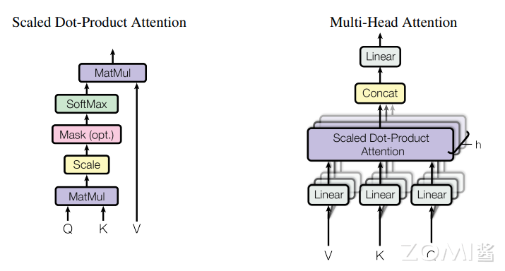

Transformer与注意力机制#
4.1 注意力机制的诞生#
4.1.1 从RNN到Transformer#
深度学习中的注意力机制（Attention Mechanism）是一种模仿人类视觉和认知系统的方法，它允许神经网络在处理输入数据时集中注意力于相关的部分。通过引入注意力机制，神经网络能够自动地学习并选择性地关注输入中的重要信息，提高模型的性能和泛化能力。
在Transformer出现之前，RNN及其变体（LSTM、GRU）是处理序列数据的主流方法。然而，RNN存在两个主要问题：
难以并行化：时序依赖性导致计算必须按顺序进行
长距离依赖问题：即使使用LSTM，在处理非常长的序列时仍然困难
2017年，谷歌团队在论文《Attention is All Your Need》中提出了Transformer架构，创新性地使用纯注意力机制替代了RNN，完全并行化处理序列数据。
4.1.2 Transformer的核心创新#
Transformer架构的核心创新包括：
自注意力机制（Self-Attention）：允许序列内部元素直接交互，不需通过循环连接
多头注意力（Multi-Head Attention）：并行运行多个注意力机制，捕捉不同类型的依赖关系
位置编码（Positional Encoding）：由于没有循环结构，需要显式注入位置信息
编码器-解码器结构：Encoder处理输入序列，Decoder生成输出序列
4.2 自注意力机制详解#
4.2.1 Scaled Dot-Product Attention#
Dot-Product Attention也称为自注意力，是Transformer的基础组件。给定查询（Query）、键（Key）和值（Value）向量，自注意力的计算如下：
其中：
\(Q \in \mathbb{R}^{n \times d_k}\)：查询矩阵
\(K \in \mathbb{R}^{m \times d_k}\)：键矩阵
\(V \in \mathbb{R}^{m \times d_v}\)：值矩阵
\(d_k\)是键向量的维度
\(\sqrt{d_k}\)是缩放因子，防止点积值过大导致梯度消失
为什么需要缩放因子？
当\(d_k\)较大时，\(QK^T\)的点积值方差会变大，可能使Softmax函数进入饱和区域（梯度接近0）。缩放因子\(\sqrt{d_k}\)使点积的方差回归到1，保证梯度稳定。

4.2.2 自注意力的计算过程#
自注意力的计算过程可以分解为以下步骤：
线性变换：对输入\(X\)分别进行三个线性变换得到\(Q\)、\(K\)、\(V\)： $\(Q = XW_Q, \quad K = XW_K, \quad V = XW_V\)$
计算注意力分数：\(QK^T\)衡量Query和Key之间的相关性
缩放：除以\(\sqrt{d_k}\)
Softmax：获得注意力权重
加权求和：用注意力权重对\(V\)加权求和
4.2.3 自注意力的矩阵形式#
用Python代码实现的自注意力网络：
import torch
import torch.nn as nn
import torch.optim as optim
from torch.utils.data import DataLoader
from torchvision import datasets, transforms
# 定义自注意力模块
class SelfAttention(nn.Module):
def __init__(self, embed_dim):
super(SelfAttention, self).__init__()
self.query = nn.Linear(embed_dim, embed_dim)
self.key = nn.Linear(embed_dim, embed_dim)
self.value = nn.Linear(embed_dim, embed_dim)
def forward(self, x):
q = self.query(x)
k = self.key(x)
v = self.value(x)
attn_weights = torch.matmul(q, k.transpose(1, 2))
attn_weights = nn.functional.softmax(attn_weights, dim=-1)
attended_values = torch.matmul(attn_weights, v)
return attended_values
4.3 多头注意力机制#
4.3.1 多头注意力的原理#
多头注意力机制是在自注意力机制的基础上发展起来的，是自注意力机制的变体，旨在增强模型的表达能力和泛化能力。它通过使用多个独立的注意力头，分别计算注意力权重，并将它们的结果进行拼接或加权求和，从而获得更丰富的表示。
每个注意力头有独立的\(W_Q^i, W_K^i, W_V^i\)参数，允许模型在不同的子空间学习不同的注意力模式。
4.3.2 多头注意力的计算#
其中：
\(h\)是注意力头的数量
\(d_k = d_{model}/h\)是每个头的维度
\(W^O \in \mathbb{R}^{hd_v \times d_{model}}\)是输出投影矩阵
4.3.3 多头注意力的代码实现#
import torch
import torch.nn as nn
import torch.optim as optim
from torch.utils.data import DataLoader
from torchvision import datasets, transforms
# 定义多头自注意力模块
class MultiHeadSelfAttention(nn.Module):
def __init__(self, embed_dim, num_heads):
super(MultiHeadSelfAttention, self).__init__()
self.num_heads = num_heads
self.head_dim = embed_dim // num_heads
self.query = nn.Linear(embed_dim, embed_dim)
self.key = nn.Linear(embed_dim, embed_dim)
self.value = nn.Linear(embed_dim, embed_dim)
self.fc = nn.Linear(embed_dim, embed_dim)
def forward(self, x):
batch_size, seq_len, embed_dim = x.size()
# 将输入向量拆分为多个头
q = self.query(x).view(batch_size, seq_len, self.num_heads, self.head_dim).transpose(1, 2)
k = self.key(x).view(batch_size, seq_len, self.num_heads, self.head_dim).transpose(1, 2)
v = self.value(x).view(batch_size, seq_len, self.num_heads, self.head_dim).transpose(1, 2)
# 计算注意力权重
attn_weights = torch.matmul(q, k.transpose(-2, -1)) / torch.sqrt(torch.tensor(self.head_dim, dtype=torch.float))
attn_weights = torch.softmax(attn_weights, dim=-1)
# 注意力加权求和
attended_values = torch.matmul(attn_weights, v).transpose(1, 2).contiguous().view(batch_size, seq_len, embed_dim)
# 经过线性变换和残差连接
x = self.fc(attended_values) + x
return x
4.4 Transformer架构#
4.4.1 编码器结构#
Transformer的编码器（Encoder）由\(N\)个相同的层堆叠而成，每层包含两个子层：
多头自注意力层：对输入序列进行自注意力计算
前馈神经网络：包含两个线性变换和ReLU激活
每个子层都使用残差连接（Skip Connection）和层归一化（Layer Normalization）： $\(Output = LayerNorm(x + Sublayer(x))\)$
4.4.2 解码器结构#
Transformer的解码器（Decoder）同样由\(N\)个相同的层堆叠而成，每层包含三个子层：
掩码多头自注意力层：确保预测时只能看到之前的输出
编码器-解码器注意力层：Query来自解码器，Key和Value来自编码器
前馈神经网络
4.4.3 位置编码#
由于Transformer没有循环结构，无法直接获取序列的位置信息，因此需要显式添加位置编码：
位置编码可以采用正弦/余弦形式，也可以采用可学习的位置嵌入。
4.5 Transformer的计算特性#
4.5.1 自注意力的计算复杂度#
自注意力的计算复杂度为\(O(n^2 \cdot d)\)，其中：
\(n\)是序列长度
\(d\)是模型的维度
这意味着：
对于短序列，自注意力高效且能捕捉全局依赖
对于长序列（如长文档或视频），计算量和内存需求爆炸性增长
4.5.2 多头注意力的并行性#
与RNN不同，自注意力可以完全并行计算：
序列中所有位置的表示可以同时计算
不需要沿时间轴顺序传递隐藏状态
大大加速了训练过程
4.5.3 长距离依赖的路径长度#
Transformer中任意两个位置之间的依赖路径长度是\(O(1)\)，而RNN中是\(O(n)\)。这使得Transformer能够更高效地学习长距离依赖。
4.6 Transformer的变体与应用#
4.6.1 BERT - 双向Transformer编码器#
BERT（Bidirectional Encoder Representations from Transformers）使用双向Transformer编码器，通过掩码语言模型（MLM）和下一句预测（NSP）进行预训练。
BERT的核心创新：
双向语境理解
预训练-微调范式
在11项NLP任务上刷新记录
4.6.2 GPT系列 - 生成式预训练Transformer#
GPT（Generative Pre-trained Transformer）系列采用单向Transformer解码器，通过语言建模进行预训练。
GPT的发展历程：
GPT-1：首发开创性的预训练-微调范式
GPT-2：扩大模型规模，尝试通用任务
GPT-3：大规模few-shot学习
GPT-4：多模态能力大幅提升
4.6.3 Vision Transformer (ViT)#
ViT将Transformer应用于图像识别：
将图像分割为固定大小的patch
将patch序列作为Transformer输入
在ImageNet上取得与CNN相当的成绩
4.6.4 大语言模型中的Transformer#
现代大语言模型（LLM）大多基于Transformer架构：
ChatGPT：基于GPT-3.5/GPT-4，强化学习人类反馈（RLHF）
Llama：Meta开源的大语言模型
PaLM：Google的大规模语言模型
4.7 Transformer对AI芯片的影响#
4.7.1 计算模式的变化#
Transformer的出现改变了AI的计算模式：
从卷积到注意力：从局部连接到全局注意力
从循环到并行：从时序计算到完全并行
矩阵运算主导：大量矩阵乘法运算
4.7.2 AI芯片设计的新要求#
Transformer对AI芯片提出了新的要求：
高带宽存储：注意力机制需要频繁读写大型矩阵
灵活的稀疏支持：如FlashAttention等稀疏注意力算法
高精度混合计算：支持FP16、BF16、FP8等多种精度
专用Transformer引擎：如NVIDIA的Transformer Engine
4.7.3 硬件优化策略#
针对Transformer的硬件优化：
算子融合：将多个小算子融合为一个大算子，减少内存访问
内存层次优化：利用高速缓存提高数据复用率
低精度推理：使用FP8等低精度加速推理
稀疏计算：支持注意力矩阵的稀疏计算
4.8 注意力机制的深入理解#
4.8.1 注意力机制的可视化#
注意力权重可以直观地展示输入序列中各元素之间的相关性：
在机器翻译中，注意力权重显示了源语言词与目标语言词的对齐
在图像描述中，注意力权重显示了生成每个词时关注的图像区域
在文档分类中，自注意力显示了词与词之间的语义关联
4.8.2 注意力机制的物理意义#
注意力机制可以被理解为一种”软寻址”方式：
Query：当前位置的内容
Key：可访问位置的内容
Value：从可访问位置获取的信息
注意力权重表示当前位置对各可访问位置的”关注程度”。
4.8.3 注意力机制与其他机制的关系#
注意力机制与其他机制有密切关系：
与LSTM门控的关系：注意力可以看作是一种动态的”门控”机制
与全连接层的关系：当注意力权重全为1时，注意力退化为全连接
与卷积的关系：局部注意力可以看作是一种受限的卷积
4.9 未来展望#
4.9.1 高效注意力机制#
为了解决自注意力的\(O(n^2)\)复杂度问题，研究者提出了多种高效注意力机制：
Sparse Attention：如Longformer、BigBird，使用稀疏模式近似全注意力
Linear Attention：如Performer、Linear Transformer，将复杂度降为\(O(n)\)
FlashAttention：利用GPU内存层次优化，减少内存读写
4.9.2 多模态融合#
Transformer统一了多模态建模：
文本、图像、音频统一表示
跨模态注意力机制
多模态大模型（如GPT-4V）
4.9.3 持续演进#
Transformer架构仍在不断演进：
更高效的结构设计
更强的长上下文能力
与其他机制的结合
本章小结#
本章系统介绍了Transformer与注意力机制的核心内容：
注意力机制原理：通过Query-Key-Value架构实现”软寻址”，允许模型动态关注输入的相关部分。
自注意力机制：通过缩放点积注意力计算序列内部元素之间的相关性，完全并行化处理。
多头注意力：并行运行多个注意力头，捕捉不同类型的依赖关系，增强模型表达能力。
Transformer架构：编码器-解码器结构，配合残差连接、层归一化、位置编码等组件。
计算特性：\(O(n^2)\)复杂度、全并行计算、\(O(1)\)长距离依赖路径，对AI芯片设计有重要影响。
应用领域：从NLP扩展到计算机视觉、多模态等领域，成为现代AI的基础架构。
硬件优化：针对Transformer特点的专用硬件设计，如Transformer引擎、稀疏计算支持等。
思考与练习#
注意力计算：假设输入序列长度为512，模型维度\(d_{model}=768\)，注意力头数\(h=12\)。计算单层自注意力的计算量（MACs）和参数量。
与RNN对比：比较RNN和Transformer在处理长序列时的优缺点。讨论为什么Transformer在长序列任务中表现更好。
缩放因子：解释为什么注意力机制需要除以\(\sqrt{d_k}\)。如果不做缩放会产生什么问题？
多头注意力的作用：分析多头注意力相比单头注意力的优势。为什么需要多个注意力头而不是一个维度更高的单头注意力？
硬件设计：讨论AI芯片应该如何优化以更好地支持Transformer推理。重点考虑注意力机制的计算特点。